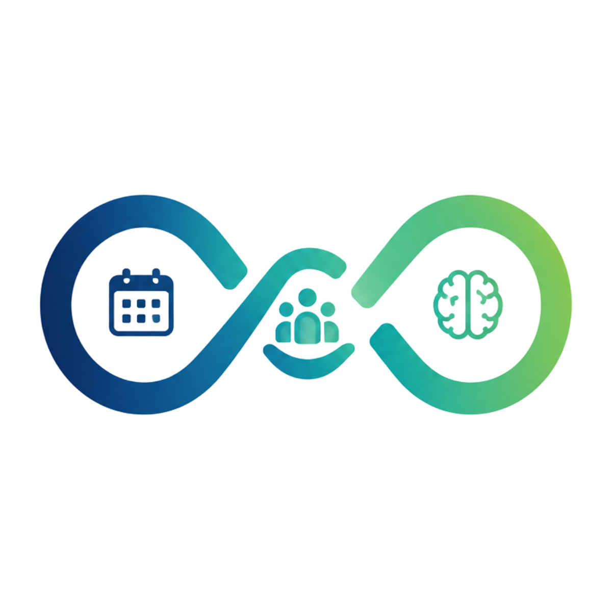

Perfil predominante:
Missão implícita: Transformar observação prática em conhecimento estruturado capaz de gerar impacto real.
A principal descoberta da mineração é que Sylvia não está construindo apenas um sistema de acompanhamento terapêutico.
O Continuum Sylvia deve evoluir prioritariamente de repositório de informações para sistema operacional pessoal e profissional, com foco em memória estruturada, decisões, hipóteses, projetos e aprendizado acumulado.